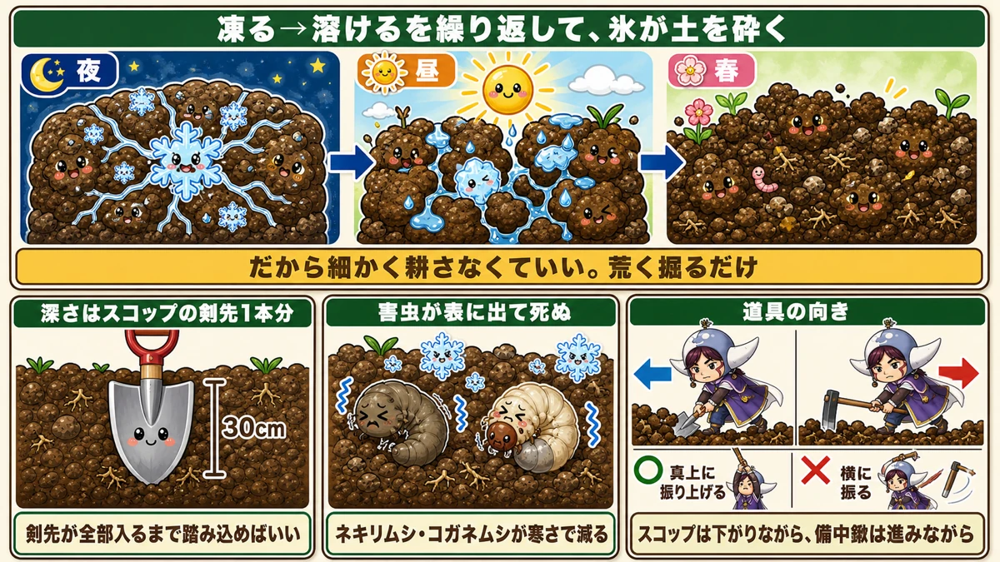
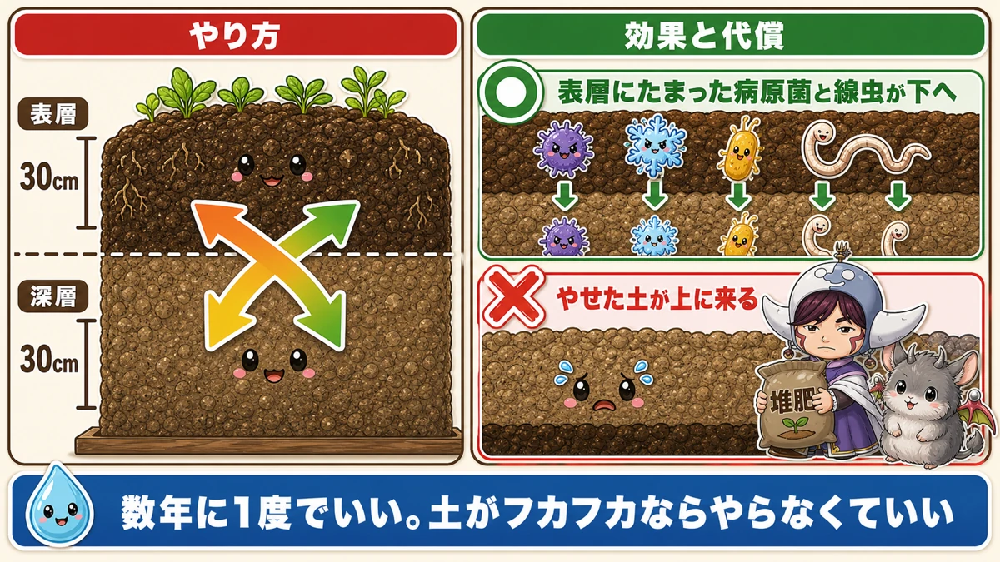
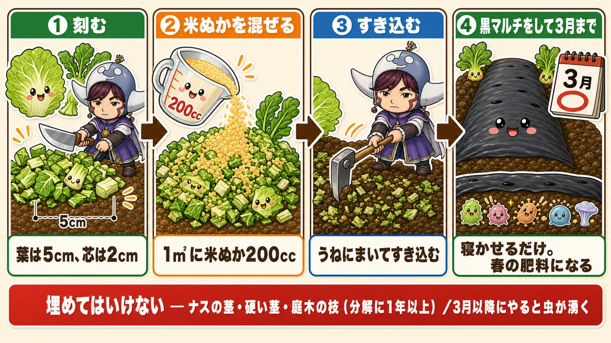
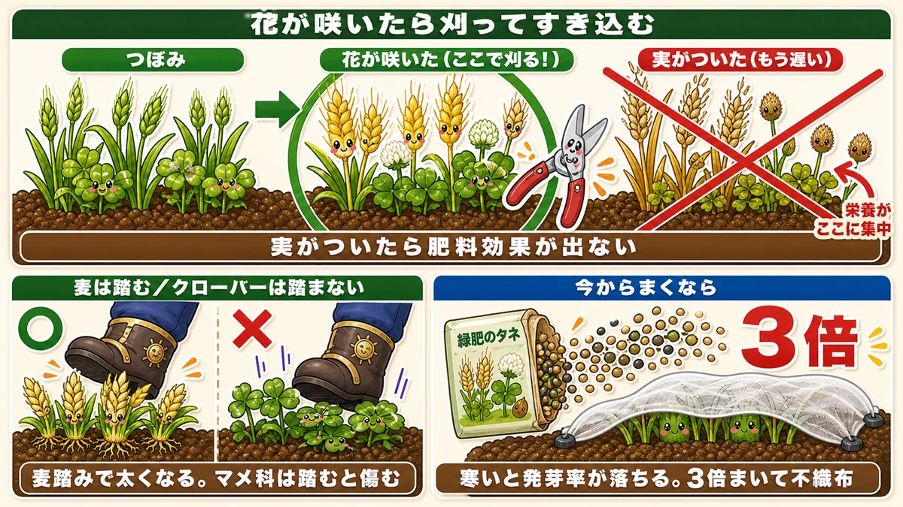
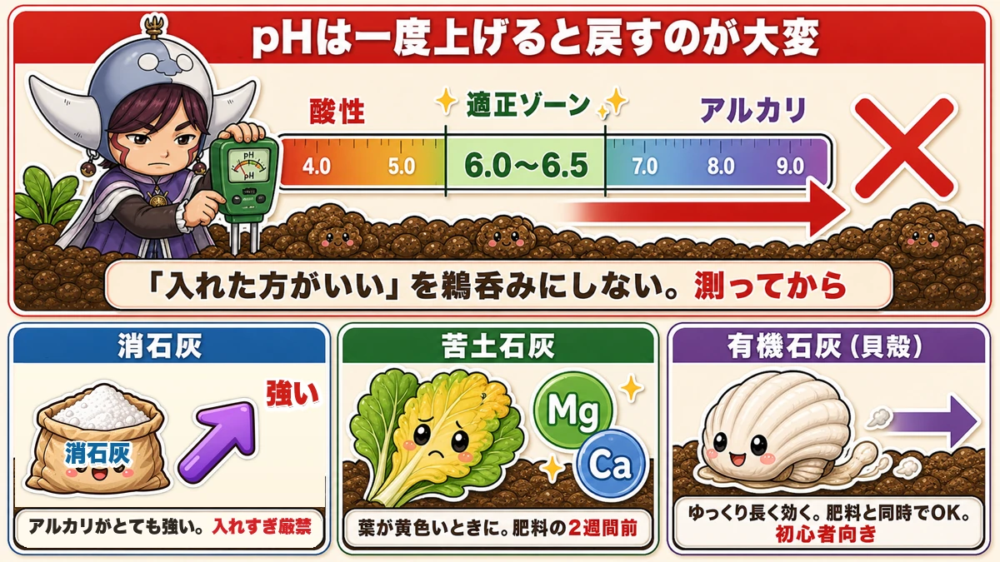
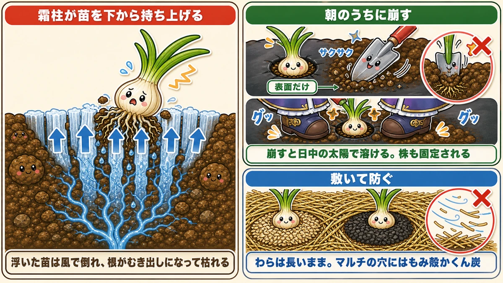
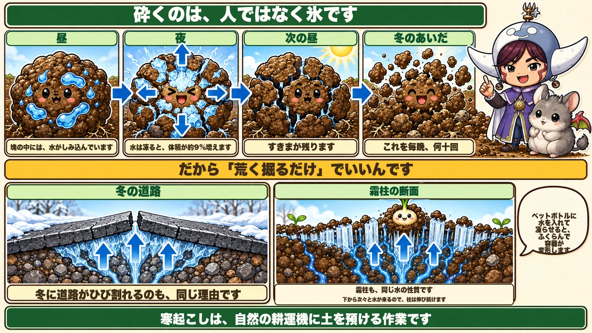

冬の畑仕事｜寒起こしと天地返し、野菜の残りを土に戻す方法、霜柱対策
どうも、8150（えいこう）です🌱 家庭菜園歴8年、理科の教員免許を持っていて、有機・無農薬で野菜を育てています。
📖 この記事の目次
この記事で分かること
- 冬は、畑の野菜が減り、管理の作業も少なくなる季節です。そのぶん、春に向けた土づくりにじっくり時間をかけられます。
- 寒起こし（かんおこし）は、土を20〜30cmの深さで荒く掘り起こし、冬の寒さと乾いた風にさらす作業です。凍ったりとけたりをくり返すうちに、土の塊がほぐれていきます。
- 天地返し（てんちがえし）は、表面の土と、その下の土を入れ替える作業です。寒起こしより大がかりなので、数年に一度で十分、という説明があります。
- どちらも、土がすでにふかふかで、水はけもよい畑なら、無理にやる必要はありません。
- 冬に出る白菜やキャベツなどの残りは、細かく刻んで土に戻すことができます。冬は虫がわきにくいのも利点です。
- 石灰は、入れる前に土の酸度を測ってから。霜柱で苗が浮いたら、押さえて戻します。
冬の畑は、夏や秋にくらべると、とても静かです。収穫する野菜も、手入れの作業も少なくなって、「冬は畑でやることがない」と感じる方もいると思います。
でも、冬は、春からの野菜づくりを左右する土づくりに、いちばん時間をかけられる季節でもあります。真冬になると畑の野菜も減り、管理作業も減ってくるので、時間的に余裕があると思います、という説明もあります。
この記事では、冬の畑でできる土づくりと、冬ならではの注意点を、順番に書いていきます。説明が分かれているところは、両方の考え方を並べておきますね。
冬の土づくりは、春の自分への準備
春になると、タネまきや植えつけ、支柱立てなど、畑仕事が一気に忙しくなります。そのときになって土が硬い、水はけが悪い、と気づいても、土を直す時間はなかなかとれません。
冬のうちに土を整えておけば、春は植えるだけ、という状態で迎えられます。寒い中での作業は大変ですが、日が高くて暖かい昼前後に、少しずつ進めていきましょう。

早見：冬の畑仕事の基本（ひと目で分かる目安）
冬にできる土づくり
- 寒起こし：土を20〜30cmの深さで荒く掘り起こし、寒さにさらす。土が硬い、水はけが悪いときに
- 天地返し：表面の土とその下の土を入れ替える。数年に一度
- 野菜の残りを土に戻す：細かく刻んで、すき込むか、敷いておく
- 空いた畝に緑肥：麦やクローバーをまいて、春まで育てる
- 石灰：入れる前に土の酸度を測る
冬の守り
- 霜柱で苗が浮いたら、押さえて戻す
- 株元にわらやもみ殻を敷く
- 小さな苗は、不織布などで守る
冬にしてはいけないこと
- 肥料を入れて、すぐにタネをまく
- 剪定した枝を、そのまま土にすき込む
- 米ぬかをたくさん入れて、すぐにタネをまく
寒起こし：土を荒く掘って、寒さにさらす
寒起こしとは
寒起こしは、冬のいちばん寒い時期に、畑の土を掘り起こして、そのまま寒さにさらしておく作業です。昔から農家で行われてきた、冬の代表的な土づくりです。
スコップやくわを使って、20〜30cmくらいの深さで、土を荒く起こします。スコップの刃の長さがちょうど30cmくらいなので、スコップ1本分の深さを掘れば大丈夫、という説明があります。
なぜ、寒起こしで土がやわらかくなるのか
寒起こしをしたあと、真冬のあいだは、土の中の水分が夜に凍って、昼にとけて乾く、ということをくり返します。これをくり返すうちに、土の塊がほぐれて、土がふかふかになる、と説明されます（あとで「学ぶ」でもう少しくわしく書きます）。
寒起こしの手順
- 空いている畝や、春に使う予定の場所を選ぶ
- スコップで、20〜30cmくらいの深さに土を掘り起こす
- 掘った土は、細かく砕かずに、大きな塊のままにしておく
- そのまま、冬の寒さと風にさらしておく
ポイントは、土を細かく砕かないことです。掘り返した土がごろごろしていて見た目は悪くても、それで大丈夫です。大きな塊のまま置いておくことで、寒さに当たる面が多くなり、凍ったりとけたりする効果が出やすくなります。
寒起こしをするのは、どんな畑か
寒起こしは、土が硬くなったり、水はけが悪くなったりしたときに、ぜひ冬のあいだにやってみてください、と説明されます。
逆に、水はけもよく、通気性もいい土なら、あえて寒起こしをしなくてもいい、という説明もあります。そういう畑では、寒起こしの代わりに、土の中の微生物を増やす取り組みをする、という考え方です。
いつやるか
寒起こしは、冬のいちばん寒い時期を利用して行います。1月の小寒から大寒にかけてが、一年でもっとも寒い時期です。この時期に掘り起こしておくと、寒さの効果を十分に受けられます。
春の植えつけ前には、細かく砕く
寒起こしで荒く起こした土は、春に野菜を植える前に、何度か耕して細かくしていきます。寒起こしのときは「砕かない」、春の準備では「細かくする」。時期によってやることが違うので、混同しないようにしましょう。

天地返し：表面の土と、下の土を入れ替える
天地返しとは
天地返しは、表面の土と、その下の土を入れ替える作業です。表面から30〜40cmの土と、その下の30〜40cmの土を入れ替える、と説明されます。
農家さんの中には、機械を使って80cm以上の深さまで掘る人もいます。家庭菜園で、そこまで深く掘るのは大変なので、スコップを使って、30cm程度の表面の土と、その下の30cm程度の土を入れ替えてみてください、という説明があります。
なぜ天地返しをするのか
野菜を何年も育て続けていると、土の中に、硬い層ができてくることがあります。この硬い層があると、根が下に伸びていけなくなる、と説明されます。
また、表面の土には、どうしても土の中の病原菌や害虫が増えてくる、と説明されます。これが、同じ場所で同じ野菜を育てると育ちが悪くなる「連作障害」の原因にもなります。何年かに一度、天地返しをすることで、土がリフレッシュされ、連作障害が出にくくなる、という説明です。
天地返しの手順
- 入れ替える範囲を決める
- まず表面の土（30cmくらい）を、横に取り出しておく
- その下の土（30cmくらい）を掘り出して、別の場所に置く
- 下の土があった場所に、取り出しておいた表面の土を入れる
- その上に、下から掘り出した土を乗せる
天地返しのあとは、肥料を少し多めに
天地返しをすると、病原菌や害虫が減るよい点がありますが、逆に、表面にあった栄養分が下にいってしまうという弱点もあります。そのため、天地返しをしたあとに野菜を育てるときは、たい肥や肥料を少し多めに入れるようにしてください、という説明があります。
ふかふかの畑なら、無理にやらない
天地返しは、ふだんからしっかり土づくりをしていて、土がふかふかなら、無理にやる必要はありません、とも説明されます。大がかりな作業なので、数年に一度、土が硬くなってきたと感じたときに考えればよい作業です。
冬の野菜の残りを深く埋める方法も
天地返しのときに、深く掘った穴の底に、白菜やキャベツの葉などの冬の野菜の残りを入れて、下の土を上に持ってくる、という方法も紹介されています。土が硬くて水はけが悪い場合や、根の張りが悪い場合にやってみると、春夏の野菜の育ちがよくなる、という説明です。
年末前にやっておくと、春までに分解が進む、と説明されます。米ぬかなどを少し加えて分解を助ける方法もありますが、米ぬかを大量に入れると窒素分が多くなって、次の野菜の育ちに悪い影響が出るので、少しだけにしましょう、という注意があります。

野菜の残りを、土に戻す
冬の残りは、土の材料になる
冬は、白菜やキャベツ、大根などの外側の葉など、野菜の残りがたくさん出る時期です。これを捨てずに、細かく刻んで土に戻すと、春に向けた土づくりの材料になります。
畝にすき込む方法
- 白菜、キャベツ、大根、ブロッコリーなどの残りを集める
- 5cmくらいの大きさに刻む。芯などの硬いところは、さらに2cmくらいに細かくする
- 畝の上に広げて、米ぬかを少し加える（1平方メートルあたり200ccほどの例がある）
- 土とよく混ぜて、すき込む
- 上からマルチを張って、3月まで置いておく
この方法を紹介している人は、3月以降に育てる野菜の肥料分として十分なので、あえてこのあと肥料を入れる必要もなくなる、と話しています。ただし、これはこの方法での話で、畑の状態によって変わります。
冬は、虫がわきにくい
真冬に野菜の残りを土にすき込んでも、虫がわくことはまったくない、という説明があります。ただし、暖かくなる3月以降に同じことをすると、虫がわくことがある、と注意されています。冬だからこそできる方法、というわけです。
分解の遅いものは入れない
木のように硬くなったなすの枝や、ブロッコリーの硬い茎などは、分解に時間がかかるので、畝にすき込むのは避ける、という説明があります。冬に剪定したローズマリーなどの木の枝も、分解に1年以上かかることがあるので、そのまますき込むのはやめましょう。
病気や虫のついた残りは使わない
アブラムシがついている葉や、病気が出た株は、土に戻すのはやめておきましょう。よく点検して、害虫がついているものは使わない、と説明されます。
敷いておく「残渣マルチ」
野菜の残りや、枯れ草、もみ殻などを、マルチの代わりに畝の上に敷いておく方法もあります。冬のあいだ敷いておき、春になったらすき込むことで、ふかふかの土を作る、という使い方です。
ただし、1週間や1か月では、ほとんど効果がない、と説明されます。冬から春3月の植えつけごろまで、じっくり時間をかけるのがポイントです。乾燥させた残りを使うのが基本ですが、生のままでもよい、という説明もあります。
段ボールで堆肥を作る
畑に残渣置き場を作ると、においや虫が気になる、という方もいると思います。段ボール箱の中で、野菜の残りと米ぬかを交互に入れ、腐葉土を2〜3つかみほど加えて堆肥を作る、という方法も紹介されています。段ボールの中は温度が安定するので、菌が増えやすい、という説明です。冬は野菜の残りが適度に湿っているので、水やりは必要ない、とも説明されます。完成までには半年ほどかかるかもしれない、という見込みです。
穴を掘って、残りを堆肥にする
畑のすみに穴を掘って、野菜の残りを堆肥にする方法もあります。10平方メートルくらいの畑なら、60cm四方、深さ50cmくらいの穴を掘って、そこに残りを入れる、という例が紹介されています。
- 野菜の残りを、20cmくらいの長さに切る
- 残りと一緒に、米ぬかや油かす、鶏ふん、土などを重ねていく
- 2か月くらいたったら、一度中身を外に出して混ぜ、戻す（切り返し）
- 5〜6か月、もしくは1年ほどで、野菜によい土に戻っていく
切り返しは、中に空気を入れて、分解を進めるための作業です。
肥料袋で、小さな残渣置き場を作る
狭い場所でも、使い終わった肥料の空き袋を使って、残渣置き場を作る方法があります。袋に8分目くらいまで土を入れて作り、一度作っておけば3〜4年は持つ、という説明です。野菜の残りがたくさん出る春に向けて、冬のうちに準備しておくのもよいと思います。
残渣置き場のコガネムシ
残渣置き場や堆肥の中から、コガネムシの幼虫（白くて丸まった虫）が出てくることがあります。残渣置き場の中では、コガネムシの幼虫は残りの分解を助ける存在として見ることもできますが、野菜の根を食べてしまうので、畑には入れないようにする、と説明されます。できあがった堆肥を畑に入れる前に、幼虫がいないか確かめましょう。
落ち葉ともみ殻の使い方
落ち葉は、土をふかふかにする
落ち葉は、土の中の微生物に食べられて、分解されると、腐植（ふしょく）という、土をよくする物質になる、と説明されます。落ち葉を土に入れると、すき間ができて水はけがよくなり、同時に水持ちもよくなり、通気性も上がる、という説明です。
冬に落ち葉を入れておけば、春の植えつけまで時間があるので、分解が進みます。植えつけの1か月前に入れておけば大丈夫、という説明があります。
根菜を育てる場所には、注意
ただし、大根やにんじんなどの根菜を育てる場所には、落ち葉はあまり向いていない、と説明されます。分解されていない落ち葉が根に当たると、根が曲がってしまうからです。
拾った落ち葉には、虫や菌がついていることも
道ばたや公園で拾った落ち葉には、害虫の卵や、望ましくない菌がついていることがある、という注意もあります。そのため、落ち葉はそのまま畑にまくのではなく、しっかり発酵させた堆肥にしてから使う、という考え方もあります（あとで書きます）。
もみ殻は、分解がとてもゆっくり
もみ殻は、土をふかふかにしたり、通気性をよくしたりするのに使われます。ただし、もみ殻は分解されるのがとても遅く、1年近くかかる、と説明されます。2年たっても形が残っていた、という話もあります。
もみ殻を大量に入れると、窒素が足りなくなる
もみ殻を土に大量に入れると、もみ殻を分解するために、土の中の窒素が使われてしまい、野菜がうまく育たないことがある、と説明されます。もみ殻を土に混ぜるときは、量を控えめにするか、窒素を補う工夫が必要です。
株元に敷いて使うのと、土に混ぜこむのとでは、気をつけることが違います。敷く使い方なら、窒素の心配は少なくなります。
くん炭も使える
もみ殻を蒸し焼きにして作るくん炭（もみ殻くん炭）は、酸性に傾いた土の改善や、水はけ・通気性の改善につながる、と説明されます。株元に敷いて保温に使うこともできます。
タネまきのあとに、もみ殻を薄くまく
にんじんや玉ねぎ、ねぎなどのタネをまいたあとに、もみ殻を薄くまいておくと、土の乾燥を防いで、芽が出やすくなる、という使い方も紹介されています。粘土質の土に混ぜると、通気性がよくなる、という説明もあります。

空いた畝に、緑肥をまく
冬のあいだ空いている畝には、麦やクローバーなどの緑肥（りょくひ）をまいておく方法もあります。緑肥は、食べるためではなく、土をよくするために育てる植物です。
冬にまいた麦などは、根が土の中に深く伸びて、土をやわらかくしてくれます。春になったら、タネができる前に刈って、土にすき込むか、野菜の株元に敷いて使います。刈る時期は、花の前や、花が咲いた段階など、説明によって違います。
緑肥の選び方やまき方、刈る時期については、別の記事でくわしく書いています。

石灰は「入れる前に測る」
冬に石灰をまく前に
冬の土づくりのときに、石灰をまいておこう、と考える方も多いと思います。でも、石灰は、とりあえず毎回まくものではありません。まず土の酸度（pH）を測って、酸性に傾いているときだけ、必要な分を入れます。
石灰の種類と待つ日数
- 消石灰：効き目が強い。肥料を入れる2週間くらい前にまく
- 苦土石灰：肥料を入れる2週間くらい前、または植える1週間程度前にまく
- 有機石灰：効き目がおだやか。肥料と同時でもよい、直前でもよい、という説明が多い
待つ日数や量は、説明によって違います。冬のうちにまいておけば、春の植えつけまでに十分な時間がとれるので、待つ日数の心配は少なくなります。
石灰の種類や量、酸度の測り方については、別の記事でくわしく書いています。

霜柱から、苗を守る
霜柱が、苗を持ち上げる
冬に植えてある玉ねぎやにんにく、スナップえんどうなどの苗は、霜柱で根が持ち上げられてしまうことがあります。根が浮くと、苗が枯れたり、風で飛ばされたりします。
もし霜柱で苗が浮いてしまったら、根が浮かないように霜柱をつぶして、根を元に戻してあげてください、と説明されます。
株元に、もみ殻やわらを敷く
寒さを少しでもやわらげるために、株元にもみ殻を敷いておく、という方法があります。わらや、もみ殻を焼いて作ったくん炭なども使われます。保温の効果と、霜柱を防ぐ効果、乾燥を防ぐ効果が期待できます。
小さな苗は、不織布や風よけで
植えたばかりの小さな苗や、まだ根がしっかり張っていない苗は、防虫ネットや不織布、風よけのビニールなどで囲んであげると安心です。一方、ある程度の大きさに育ったスナップえんどうなどは、防寒に過度に気を使う必要はない、という説明もあります。苗の大きさを見て、守り方を決めましょう。
いちばん冷えるのは1月の後半
1月の後半は、一年でいちばん寒さに警戒が必要な時期だ、と説明されます。玉ねぎやにんにく、スナップえんどうなど、2月を越して育つ野菜は、この時期に寒さでやられることが多い、という説明です。寒波が来てからでは遅いので、その前に対策をしておきましょう。
いちごの冬越し
いちごも、霜柱で株が持ち上げられることがあります。株元にもみ殻やくん炭を敷いておく方法が紹介されています。土が湿りすぎていると病気が出やすくなることもあるので、水はけにも気をつけましょう。
冬にしてはいけないこと
肥料を入れて、すぐにタネをまく
冬は、肥料の分解がとてもゆっくりになります。肥料の分解には2週間以上かかるので、肥料を入れてすぐにタネをまくと、分解の途中で障害が出ることがある、と説明されます。厳寒期の野菜は育つのも非常に遅いので、肥料が残っている場所を使い、新しい肥料は入れずにタネをまくほうがよい、という説明です。
生の米ぬかをたくさん入れて、すぐタネをまく
生の米ぬかは、分解されるときに熱を出したり、虫を呼んだりすることがあります。米ぬかを入れてすぐにタネをまくのは避けましょう。米ぬかは、少量にするか、時間を置いてから植えるようにします。
剪定した枝を、そのまますき込む
冬に剪定した木の枝は、分解に1年以上かかることがあります。土にすき込むのはやめて、細かくしてから堆肥にするなど、別の使い方を考えましょう。
防虫ネットを、すぐに外す
冬でも、暖かい日には虫が活動しています。野菜がネットにつっかえてきても、すぐに外さないようにしましょう。
結球中の外の葉を取る
キャベツや白菜の外側の葉は、結球（葉が巻いて玉になること）のために大切な役割をしています。地面についているからといって、取らないようにしましょう。
冬の畑仕事の順番（例）
冬のあいだに、どの順番で何をやるかの例です。地域や畑の状態によって変わるので、目安として読んでください。
12月：片づけと、残りの処理
秋の野菜の収穫が終わった場所を片づけます。出てきた野菜の残りは、細かく刻んで畝にすき込むか、残渣置き場や段ボールで堆肥にします。空いた畝に緑肥をまくなら、早めにまいておきます。
1月：寒起こしと天地返し
一年でいちばん寒い時期です。春に使う予定の畝で、寒起こしをします。何年も同じ場所で野菜を育てていて、土が硬くなってきたと感じるなら、天地返しも考えます。霜柱で苗が浮いていないかも、ときどき見て回りましょう。
2月：酸度を測って、石灰の準備
春の植えつけに向けて、土の酸度を測ります。酸性に傾いていれば、石灰を入れて土とよく混ぜておきます。寒起こしをした土を、少しずつ細かくしていくのもこの時期です。
3月：春の植えつけの準備
暖かくなってきたら、元肥を入れて、春から夏の野菜を植える準備を始めます。冬にすき込んだ残りや落ち葉の分解も、暖かくなるとともに進んでいきます。
失敗の見分け方
寒起こしをしたのに、春に土が硬いまま
土を細かく砕いてしまったか、寒さが十分でなかった可能性があります。次は、大きな塊のまま置いておくようにしてみてください。春の植えつけ前に、何度か耕して細かくしていきましょう。
春に耕したら、もみ殻がたくさん出てきた
もみ殻は分解がとてもゆっくりなので、1年以上形が残ることがあります。野菜の育ちが悪いようなら、窒素が足りていない可能性もあります。
落ち葉を入れた場所の大根が、曲がった
分解されていない落ち葉が、根に当たった可能性があります。根菜を育てる場所には、落ち葉は入れないか、十分に分解させてから使いましょう。
すき込んだ野菜の残りが、春になってもそのまま
硬い茎や芯が、大きいまま入っていた可能性があります。次は、細かく刻んでから入れ、米ぬかを少し加えて分解を助けてあげてください。
霜柱で浮いた苗が、枯れてしまった
根が浮いたまま、乾いた風にさらされて、根が乾いてしまった可能性があります。霜柱が立った朝は、早めに畑を見回り、浮いた苗を押さえて戻してあげましょう。株元にもみ殻やわらを敷いておくと、霜柱が立ちにくくなります。
説明が分かれていること
寒起こしはやるべきか
- 土が硬い、水はけが悪いときは、冬に寒起こしをする、という説明
- 水はけも通気性もよい畑なら、あえてやらなくてよい、という説明
土の状態で決めてください。
落ち葉はどう使うか
- 拾った落ち葉には虫の卵や菌がついていることがあるので、発酵させて完熟の堆肥にしてから使う、という説明
- 冬のうちに落ち葉を畑に入れて、春まで置いておく、という説明
すぐに植える場所や、根菜を育てる場所なら、完熟させてから使うほうが安心です。
冬に残りをすき込んでも虫はわかないか
- 真冬なら、野菜の残りをすき込んでも虫はわかない、という説明
- アブラムシがついた材料や、病気が出た株は使わない、という説明
冬でも、材料そのものについている虫や病気には注意が必要です。
もみ殻は土をよくするか
- もみ殻を土に入れると、通気性がよくなる、という説明
- もみ殻を大量に入れると、窒素が足りなくなったり、根の張りに問題が出たりする、という説明
敷くのか、混ぜこむのか、どれくらいの量なのかで変わります。
なすの残りは入れてよいか
- 木のように硬いなすの枝は、分解が遅いので避ける、という説明
- 深い穴に埋める方法では、秋なすの残りや根も入れてよい、という説明
浅くすき込むのか、深く埋めて長く置くのかで、考え方が違います。
米ぬかを入れてから、植えるまで
- 米ぬかを使った土づくりは、植える1か月以上前に入れる、という例
- 米ぬかを入れて、10日後にタネまきや植えつけをする、という例
米ぬかの量や、季節によって変わります。冬は分解がゆっくりなので、時間を長めにとっておくほうが安心です。
よくある質問
Q. 寒起こしと天地返しは、どちらをやればいいですか？
A. 土が硬い、水はけが悪いと感じるなら、まずは寒起こしから始めるのがおすすめです。天地返しは大がかりな作業なので、何年も同じ場所で野菜を育てて、連作障害が気になってきたときに考えればよいと思います。
Q. 寒起こしは、雪が降る地域でもできますか？
A. 雪が積もる前に、土を掘り起こしておくとよいでしょう。雪の下でも、土は凍ったりとけたりをくり返します。ただし、地域によって条件が違うので、地元の方のやり方も参考にしてください。
Q. 野菜の残りは、どれくらい細かくすればいいですか？
A. 5cmくらいに刻み、芯などの硬いところは2cmくらいまで細かくする、という例があります。細かいほど分解が早く進みます。
Q. 冬に土づくりをしたら、春に肥料はいりませんか？
A. 冬に野菜の残りをすき込んだので、春の肥料はいらなくなる、と話す人もいますが、畑の状態によって変わります。天地返しをした場合は、表面の栄養分が下にいってしまうので、肥料を少し多めに、という説明もあります。春に植える前に、野菜の育ち具合を見ながら調整してください。
Q. 寒起こしをした場所に、すぐ野菜を植えられますか？
A. 寒起こしは、冬のあいだ寒さにさらすための作業です。春になってから、何度か耕して土を細かくし、元肥を入れて、分解の時間をとってから植えましょう。
Q. 冬に畑に行く回数は、どれくらいでいいですか？
A. 冬は野菜の育ちがゆっくりなので、毎日行く必要はありません。ただし、霜柱で苗が浮いていないか、強い風でネットが飛ばされていないかは、ときどき確かめに行きましょう。寒波の前後は、特に見ておくと安心です。
Q. 冬の土づくりで、いちばん大事なことは？
A. 自分の畑の土が、今どういう状態かを知ることです。土が硬いのか、水はけが悪いのか、酸性に傾いているのか。それによって、寒起こしをするのか、残りをすき込むのか、石灰を入れるのかが決まります。全部やろうとせず、必要なことだけを選びましょう。
Q. 野菜の残りを置いておく場所がありません
A. 畝に直接すき込む方法なら、残渣置き場はいりません。細かく刻んで畝に混ぜ、マルチを張って春まで置いておきます。狭い場所なら、肥料の空き袋を使った小さな残渣置き場や、段ボールで堆肥を作る方法もあります。
Q. 冬に土を掘ったら、コガネムシの幼虫が出てきました
A. 見つけたら取り除いておきましょう。コガネムシの幼虫は、野菜の根を食べてしまいます。冬に土を掘り起こすと、幼虫を見つけやすいので、寒起こしや天地返しは、幼虫を減らすよい機会にもなります。
Q. 生の米ぬかと、脱脂米ぬかは何が違いますか？
A. 脱脂米ぬかは、米ぬかから油分を取り除いたものです。生の米ぬかは、分解されるときに熱を出したり、虫を呼んだりしやすい、と説明されます。どちらを使う場合も、入れてすぐにタネをまくのは避けて、時間を置くようにしましょう。
Q. 寒起こしをするときに、石灰も一緒にまいていいですか？
A. 石灰を入れるかどうかは、まず酸度を測ってから決めます。測って酸性に傾いているなら、寒起こしのあと、春の植えつけまでに時間があるうちに入れておくと、待つ日数の心配がなくなります。寒起こしの塊のままでは石灰が混ざりにくいので、土を少し細かくするタイミングで混ぜるとよいでしょう。

学ぶ🔬 なぜ土は、凍るとやわらかくなるのか
ここからは、寒起こしで土がやわらかくなるしくみについて、少しだけ深く書いておきます。読み飛ばしても大丈夫です。
水は、凍るとふくらむ
水は、凍って氷になると、体積が1割ほどふくらみます。冬に、水を入れたペットボトルを凍らせると、ふくらんでいるのを見たことがある方もいると思います。
土の塊の中には、細かいすき間がたくさんあって、そこに水が入りこんでいます。夜に冷えてこの水が凍ると、ふくらんで、すき間を内側から押し広げます。
凍ったりとけたりのくり返し
昼になって氷がとけると、すき間は少し広がったままになります。そして、また夜に凍ると、さらに押し広げられます。これを何度もくり返すうちに、硬い土の塊に細かいひびが入り、だんだんほぐれていきます。
寒起こしで土を大きな塊のまま置いておくのは、この「凍ったりとけたり」を、塊の表面全体で起こさせるためなんですね。細かく砕いてしまうと、かえってこの効果が出にくくなります。
乾いた風も、土をほぐす
冬の乾いた風も、土をほぐすのを手伝います。とけた水が、昼のあいだに乾いた風で蒸発していくと、土は乾いて縮みます。凍ってふくらむ、乾いて縮む。この動きのくり返しが、土の塊をほぐしていくんです。
霜柱も、同じ「凍る力」
霜柱も、同じ「水が凍る力」で起きます。地面の表面が冷えて凍ると、土の中の水分が、すき間を伝って表面に吸い上げられ、次々に凍って、細い氷の柱になっていきます。霜柱が伸びるとき、表面の土も一緒に持ち上げるので、植えたばかりで根の浅い苗は、土と一緒に持ち上げられてしまうんです。
寒起こしでは、この凍る力を土づくりに利用し、霜柱対策では、この凍る力から苗を守る。同じしくみを、場面によって使い分けているんですね。
微生物は、冬は休んでいる
土の中の小さな生きもの（微生物）は、寒い冬は働きがゆっくりになります。野菜の残りや肥料の分解が冬に遅くなるのは、このためです。
だから、冬に入れた野菜の残りや落ち葉は、すぐには分解されず、春に暖かくなって微生物の働きが活発になるころに、分解が進んでいきます。冬の土づくりは、春に向けて「仕込んでおく」作業、と考えると分かりやすいと思います。
「腐植」は、土の中のスポンジ
落ち葉や野菜の残りが、土の中の微生物に分解されると、最後に「腐植（ふしょく）」と呼ばれる、黒っぽい物質ができます。森の土が黒くてふかふかなのは、この腐植がたくさん含まれているからです。
腐植には、土の細かい粒どうしをくっつけて、小さな塊（だんご）を作る働きがあります。塊と塊のあいだには大きなすき間ができて、水はけや通気性がよくなります。そして、塊の中の小さなすき間には水がたくわえられるので、水持ちもよくなります。
落ち葉を入れると、水はけがよくなるのに水持ちもよくなる、と説明されるのは、このしくみがあるからなんですね。冬に入れた残りや落ち葉が、春から夏にかけて少しずつ腐植になって、土を育てていきます。
まとめ
ここまで読んでくださって、ありがとうございます！
冬の畑仕事のポイントを、もう一度まとめておきます。
- 冬は、春に向けた土づくりにじっくり時間をかけられる季節
- 寒起こしは、20〜30cmの深さで荒く掘り、塊のまま寒さにさらす
- 天地返しは、表面の土とその下の土を入れ替える大仕事。数年に一度で十分
- 土がふかふかで水はけがよければ、どちらも無理にやらなくてよい
- 冬の野菜の残りは、細かく刻んで土に戻せる。硬い枝や病気の株は使わない
- 落ち葉は根菜の場所に注意。もみ殻は分解がとても遅く、大量に入れると窒素が不足する
- 石灰は、入れる前に酸度を測る
- 霜柱で浮いた苗は押さえて戻し、株元にもみ殻やわらを敷く
- 肥料や米ぬかを入れてすぐにタネをまかない
冬の畑仕事は、春になってから、土のやわらかさや野菜の育ち方となって返ってきます。全部をやる必要はありません。自分の畑に必要なことを、ひとつずつ選んで進めてください。寒い日は無理をせず、体を冷やさないようにしてくださいね。
まずは、春に使う予定の畝を1本選んで、スコップで掘り起こしてみてください。掘った土の硬さや色を見るだけでも、自分の畑のことがよく分かります❄️
米ぬか
刻んだ外葉に混ぜて埋めると、春の肥料になります。1平方メートルに200ccが目安。落ち葉堆肥を仕込むときにも、これがないと発酵が始まりません。
![[商品価格に関しましては、リンクが作成された時点と現時点で情報が変更されている場合がございます。]](https://hbb.afl.rakuten.co.jp/hgb/56d21cb1.eebb183f.56d21cb2.51de80a8/?me_id=1247635&item_id=10000021&pc=https%3A%2F%2Fthumbnail.image.rakuten.co.jp%2F%400_mall%2Feco-hiryo%2Fcabinet%2Fitem6%2Fset-1-a1.jpg%3F_ex%3D240x240&s=240x240&t=picttext "[商品価格に関しましては、リンクが作成された時点と現時点で情報が変更されている場合がございます。]")

カキ殻石灰（有機石灰）
記事で「迷ったらこれ」と書いた有機石灰です。熱が出ないので肥料と同時に入れられて、ゆっくり長く効きます。※入れる前にpHを測ってからにしてください。
![[商品価格に関しましては、リンクが作成された時点と現時点で情報が変更されている場合がございます。]](https://hbb.afl.rakuten.co.jp/hgb/56d21b6a.c19127f6.56d21b6b.c5473e84/?me_id=1258048&item_id=10000067&pc=https%3A%2F%2Fthumbnail.image.rakuten.co.jp%2F%400_mall%2Fkaneashop%2Fcabinet%2F12084383%2F12419790%2Fimgrc0108924525.jpg%3F_ex%3D240x240&s=240x240&t=picttext "[商品価格に関しましては、リンクが作成された時点と現時点で情報が変更されている場合がございます。]")
もみ殻くん炭
霜柱で苗が浮くのを防ぎ、粘土質の土に混ぜれば通気性が良くなります。弱アルカリ性なので酸度の矯正にもなる、冬にいちばん働く資材です。
![[商品価格に関しましては、リンクが作成された時点と現時点で情報が変更されている場合がございます。]](https://hbb.afl.rakuten.co.jp/hgb/56bc30bc.01c5b89d.56bc30bd.ee310357/?me_id=1231595&item_id=10000412&pc=https%3A%2F%2Fthumbnail.image.rakuten.co.jp%2F%400_mall%2Fplanto-iwa%2Fcabinet%2F2707.jpg%3F_ex%3D240x240&s=240x240&t=picttext "[商品価格に関しましては、リンクが作成された時点と現時点で情報が変更されている場合がございます。]")
敷きわら
株元に敷いて霜柱を防ぎます。記事に書いたとおり、短く切ったものより長いままうねに沿って敷くほうが、風で飛びません。
![[商品価格に関しましては、リンクが作成された時点と現時点で情報が変更されている場合がございます。]](https://hbb.afl.rakuten.co.jp/hgb/56bc2fb2.ff40a6e6.56bc2fb3.618f6a70/?me_id=1257026&item_id=10000211&pc=https%3A%2F%2Fthumbnail.image.rakuten.co.jp%2F%400_mall%2Fsharuka%2Fcabinet%2F09042254%2Fimgrc0081094692.jpg%3F_ex%3D240x240&s=240x240&t=picttext "[商品価格に関しましては、リンクが作成された時点と現時点で情報が変更されている場合がございます。]")
えん麦のタネ（緑肥用）
空いたうねにまいておくと、冬の間も土の微生物が生きていられます。春に花が咲いたら刈ってすき込むだけ。ちなみにこれ、猫草と同じものです。
![[商品価格に関しましては、リンクが作成された時点と現時点で情報が変更されている場合がございます。]](https://hbb.afl.rakuten.co.jp/hgb/56d21de3.ae31fd42.56d21de4.bc885a0a/?me_id=1381384&item_id=10000017&pc=https%3A%2F%2Fthumbnail.image.rakuten.co.jp%2F%400_mall%2Fyohonsha%2Fcabinet%2F10419213%2Fcompass1768461115.jpg%3F_ex%3D240x240&s=240x240&t=picttext "[商品価格に関しましては、リンクが作成された時点と現時点で情報が変更されている場合がございます。]")